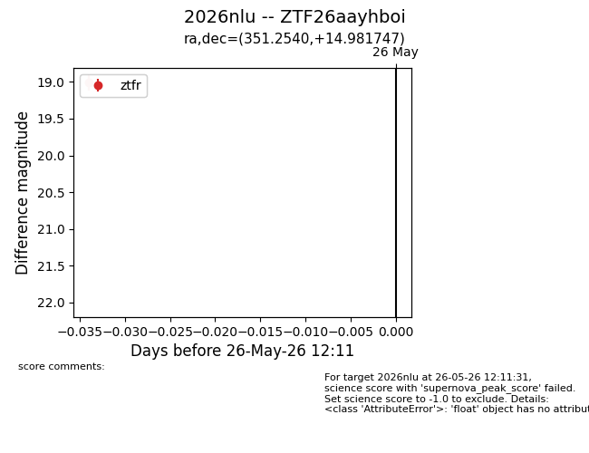
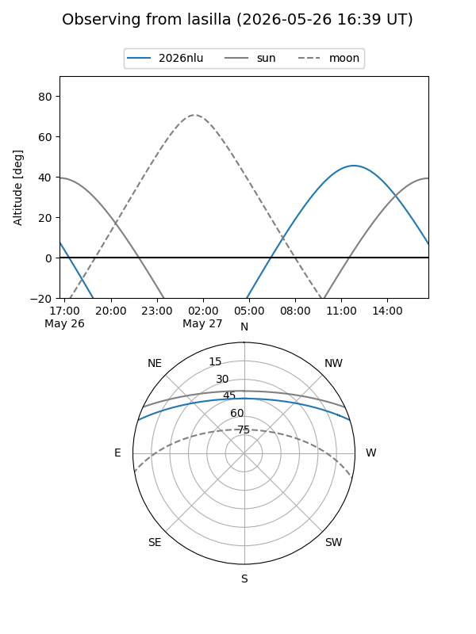
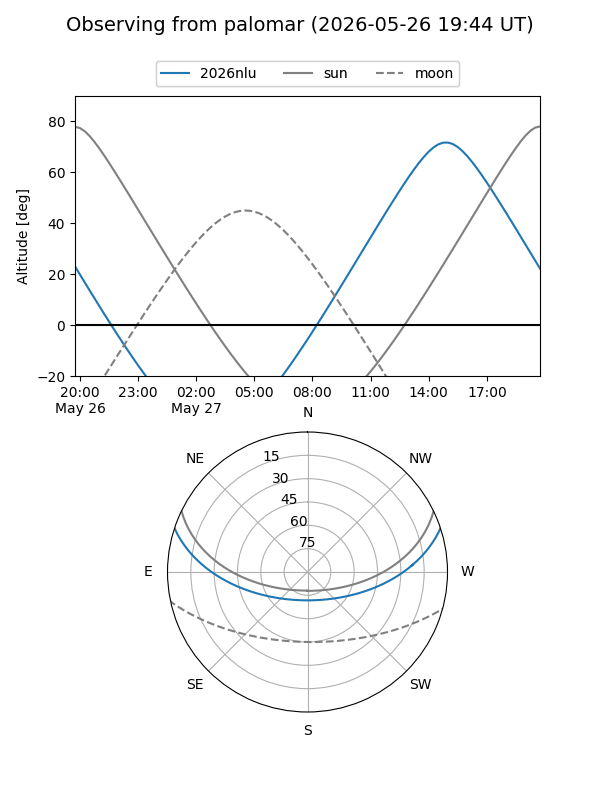
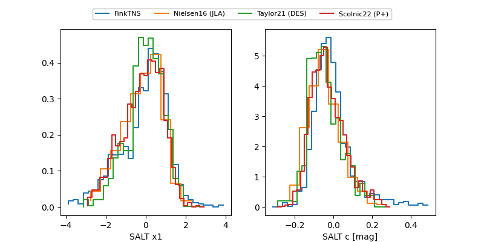

2026nlu
Target 2026nlu at 2026-05-26 12:14
Aliases and brokers:
lsst-FINK: link
lsst-Lasair: link
lsst-ALeRCE: link
ztf-FINK: link
ztf-Lasair: link
ztf-ALeRCE: link
TNS: link
YSE: link
alt names
ZTF26aayhboi (ztf,fink_ztf)
2026nlu (tns,yse)
Coordinates:
equatorial (ra, dec) = 351.2540,+14.98175
equatorial (HMS+DMS) = 23:25:00.95,+14:58:54.29
galactic (l, b) = (93.8527,-42.95742)
Flags:
TNS confirmed: nan
Photometry:
last ztfr=19.01
1 ztfr detections
Lightcurve

Visibility


Additional plots
